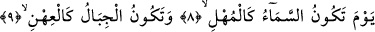
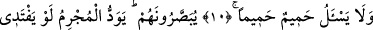
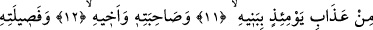
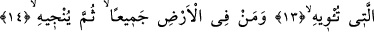
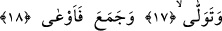
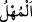

O GÜN GÖKYÜZÜ
ERİMİŞ MÂDEN GİBİ OLUR
8. O gün gökyüzü, erimiş mâden gibi olur.
9. Dağlar da atılmış yüne döner.
10. Dost, dostu sormaz.
11. Birbirlerine gösterilirler (fakat herkes kendi derdindedir). Günahkâr kimse
ister ki, o günün azâbından (kurtuluş için), oğullarını,
12. Karısını, kardeşini,
13. Kendisini koruyup barındıran tüm âilesini
14. Ve yeryüzünde kim varsa hepsini fidye olarak versin de, tek kendini
kurtarsın.
15. Fakat ne mümkün! Bilinmeli ki, o (cehennem) alevlenen bir ateştir.
16. Derileri kavurup soyar.
17. Yüz çevirip geri dönen,
18. (Servet) toplayıp yığan kimseyi (kendine) çağırır!
“O gün gökyüzü erimiş mâden gibi olur.” Erimiş mâden anlamına gelen “__WORD__/el-
mühl”, demirin ve benzeri mâdenlerin ateşte yavaş yavaş ve tedrîcen erimeleri
sonucunda geride bıraktıkları cürûf anlamınadır. Veya katı olduğu için yavaş yavaş akan
zeytinyağı tortusu anlamınadır.
İbn Mes’ud (r.a.) göre “mühl”, renkli olan erimiş gümüş gibidir. Ya da siyahlıkta
katran ve zift gibidir. Âyette yer alan “yevm”, yukarıda geçen ve yakın anlamına gelen
“karîben” kelimesine bağlıdır. Buna göre âyetin mânâsı; Biz ise onu yakın görmekteyiz.
Göklerin erimiş mâden gibi olduğu o günde mümkün görmekteyiz. Bir başka ifâdeyle bu
mümkünlük o gün ortaya çıkacaktır. Yoksa mümkünlüğün bizâtihî kendisinin herhangi
bir günle sınırlı olması diye bir şey yoktur.
Veya “yevm” kelimesi daha sonra gelen muzmer/gizli bir kelimeye bağlıdır. Buna